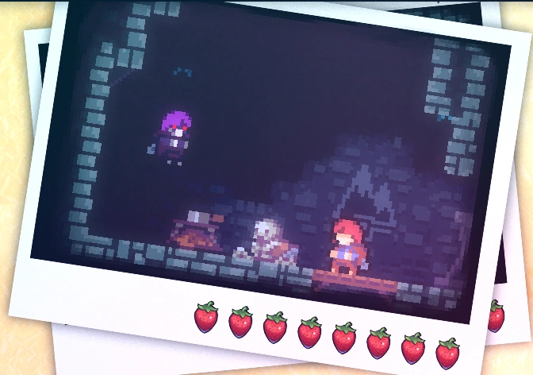

Capítulo 8: Núcleo
Núcleo é o oitavo capítulo de Celeste. Inclui novas mecânicas, sendo a principal delas a incapacidade de recuperar o dash ao tocar o chão.
Mecânicas
Terreno Antigo introduz 4 novas mecânicas:
• Escudos,
Plot
Terreno Antigo introduz 1 nova personagem:
• Badeline.

O prólogo começa com Madeline mentalmente se encorajando a seguir com sua jornada. Seguindo, Madeline encontra um pássaro que ensina a ela como escalar. Após isso, Madeline encontra um mulher idosa com quem pede direções. A idosa debocha de Madeline e avisa sobre os perigos da montanha, mas Madeline a julga como lunática e continua com seu caminho. Logo em seguida, Madeline passsa por uma ponte que colapsa enquanto ela a atravessa, fazendo Madeline começar a cair. Porém, o pássaro ensina Madeline sobre o dash, salvando-a. Madeline chega no chão e se encoraja novamente, assim terminando a fase.
Diálogos
Vovó: Oi, menina!
Vovó: Que bom ver você de novo.
Vovó: Aqui está a caverna que falei pra você no telefone.
Siga-me.
Madeline: Que lugar é esse?
Vovó: Esta passagem leva ao centro da Montanha.
Vovó: Você disse que queria voltar e explorar mais profundamente...
Vovó (rindo): Difícil ser mais profundo que isso!
Vovó: Mas tenha cuidado, bem.
Vovó: Quando você chega assim tão perto do coração da Montanha, o poder dela começa a te afetar de forma diferente.
Madeline: É, eu já estou percebendo
Vovó: Boa sorte lá dentro.
Vovó: Onde está aquela outra Parte de Você?
Madeline: Não sei... Eu esperava que ela já tivesse aparecido.
Madeline: Talvez eu tenha mudado e ela não seja mais Parte de Mim.
Vovo: Ou talvez vocês tenha crescido juntas.
Vovó: Talvez não seja fácil para a Montanha separar vocês agora.
Vovó: Eu aposto que ela ainda está com você, de alguma forma.
Madeline: Gosto mais dessa teoria.
Madeline: Mas eu ainda queria poder falar com ela.
Vovó: Você ainda fala com o Theo?
Madeline: Sim, ele passou o verão em Vancouver.
Madeline: A gente aproveitou bastante o tempo junto.
Vovó: O que ele anda fazendo?
Madeline: Ele voltou a morar com a família na Califórnia.
Madeline: Disse que quer estar por perto enquanto a irmã termina a faculdade de direito.
Madeline: Parece bem intenso, mas ele quer estar lá pra apoiar ela.
Vovó: Ele parece ser um rapaz muito bom.
Madeline: Já faz tempo. Como a senhora está?
Vovó: Ah, a mesma velha história.
Vovó (rindo): E no meu caso, bota velha nisso.
Vovó: Sei que não sou mais nenhuma mocinha.
Vovó: Tem dias que só manter os olhos abertos já me deixa exausta.
Vovó: Mas a Montanha me mantém ligada.
Vovó: Não vou dessa pra melhor tão cedo.
Madeline: Eu não esperaria menos da senhora.
Madeline: Se cuida.
Na tela: ...é isso?
Na tela: É isso que está no centro de tudo?
Na tela: É tão vazio... e vasto...
Na tela: Ainda assim sinto uma nostalgia de certa forma.
Na tela: E paz.
Coletáveis
Coração de cristal:
O coração de cristal do capítulo 1 é adquirido no segundo subcapítulo após acessar
uma passagem
secreta. Na sala do coração de cristal, existe um computador que pisca luzes coloridas em uma
ordem e alguns pássaros das mesmas cores do computador que avançam para diferentes direções.
Para conseguir o coração de cristal, é necessário usar o dash na direção dos pássaros na ordem
mostrada pelo computador. A ordem correta é:
• Cima (Branco),
• Esquerda (Roxo),
• Baixo-direita (Azul),
• Cima-direita (Vermelho),
• Esquerda (Roxo),
• Cima-esquerda (Amarelo).
- Veja: como encontrar...
Fita cassete:
A fita cassete do capítulo 1 é adquirida no terceiro subcapítulo após acessar uma passagem
secreta. Na sala da fita cassete, são encontradas plataformas rítmicas. Após alcançar o
objetivo, uma bolha transportara o jogador de volta para o começo da sala.
- Veja: como encontrar...

Morangos:
• Morango dourado:
Conseguido após concluir a fase enquanto segura o morango dourado. Só pode ser coseguido após concluir o lado B do capítulo 8.
• Morango vermelho:
Morango 1: Morango vermelho:
Morango 2: Morango vermelho:
Subcapítulos
Cidade Abandonada possui 3 subcapítulos:
Início

Intervenção
Desperta